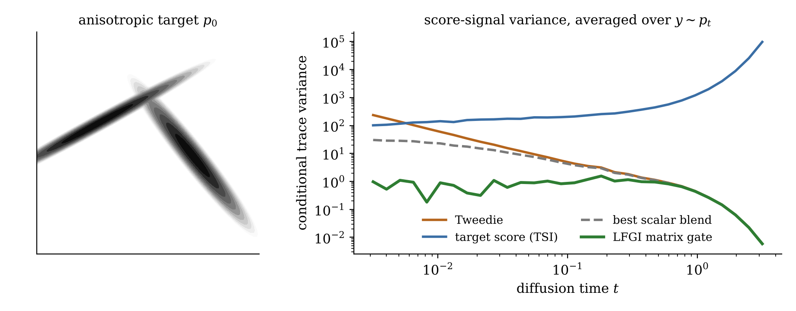
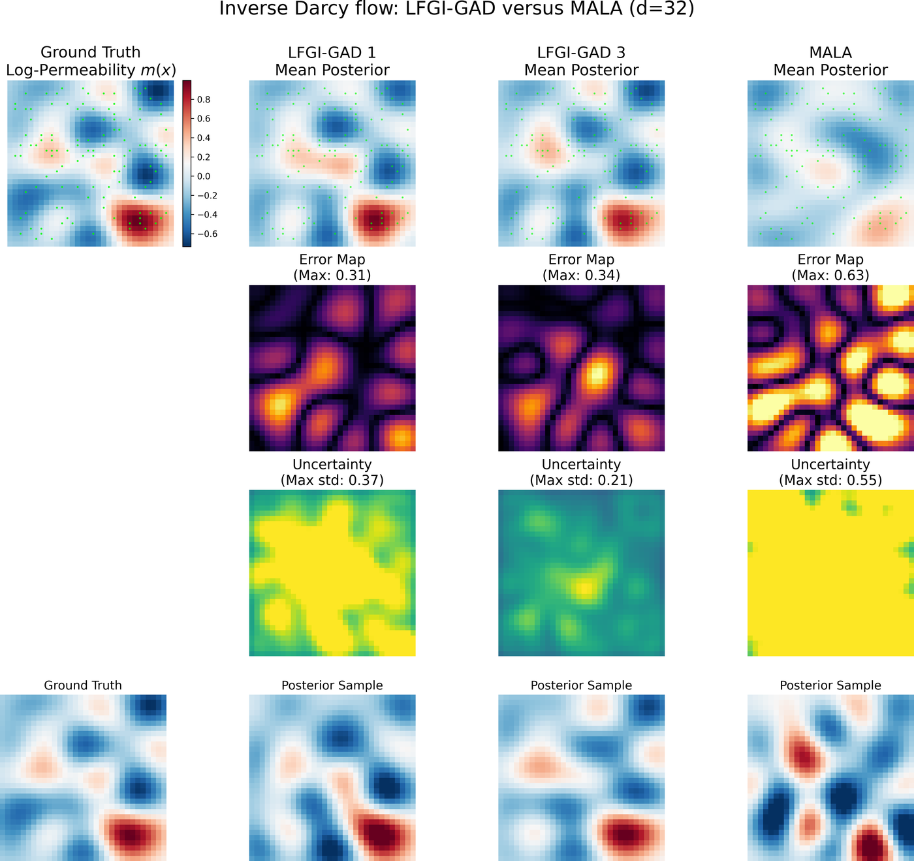
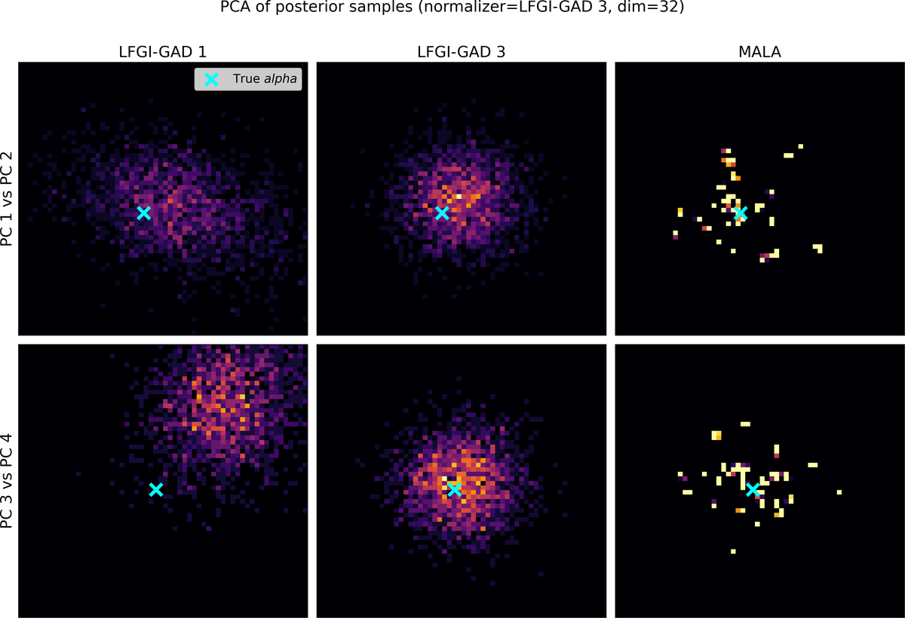
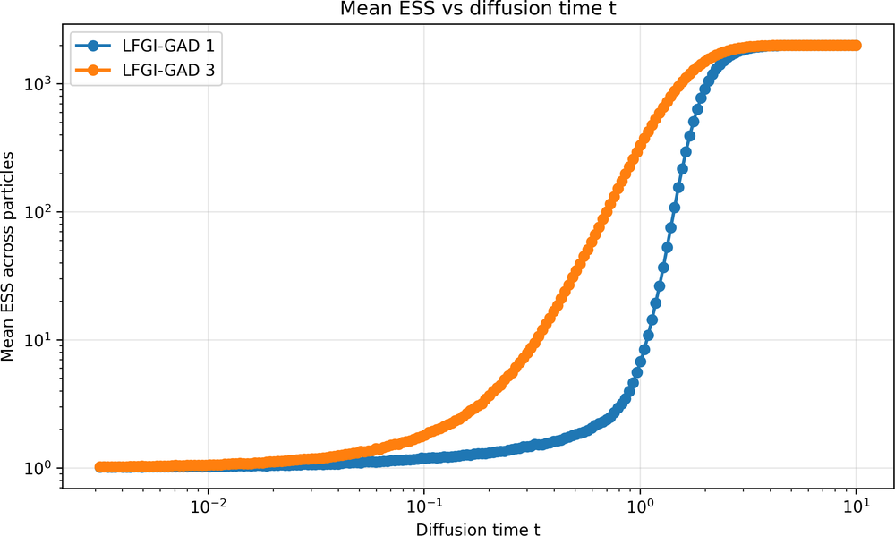
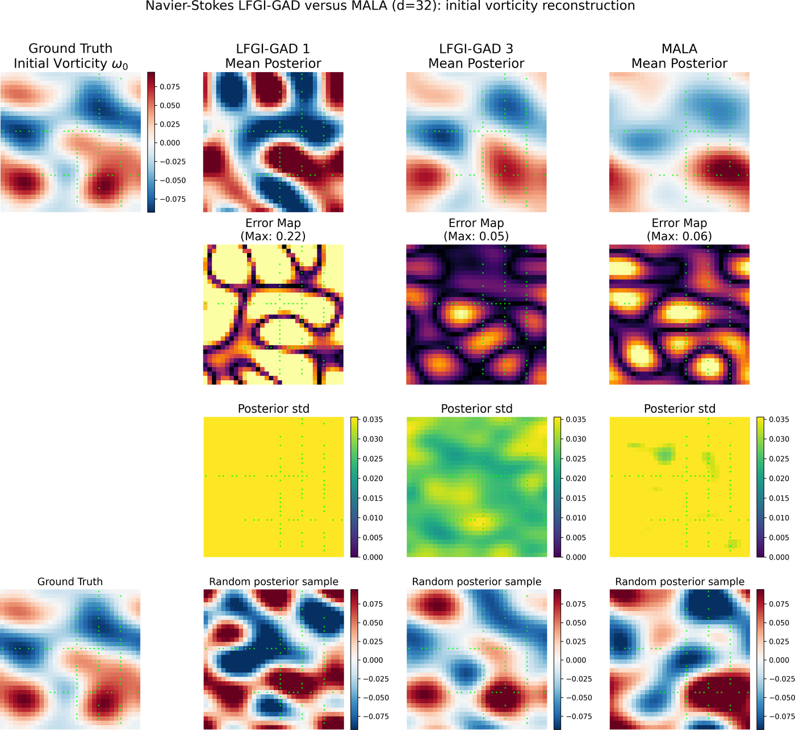
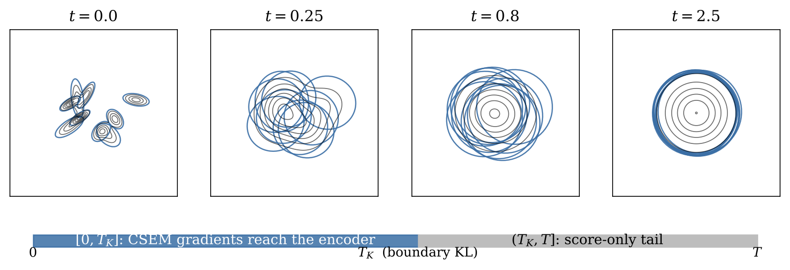

Research
Diffusion models need the score of every noise-perturbed marginal along the forward process. My projects ask how to get those scores when the standard ingredient is missing or noisy: when the target is an unnormalized posterior with no samples, or when the latent space of a generative model is itself being learned.
Diffusion sampling for Bayesian inverse problems
In a Bayesian inverse problem the target density is known up to a constant, together with its score and (Gauss–Newton) curvature, but there are no target samples. These three projects build score estimators from that information and use them to transport samples to the posterior.
Variance-reduced diffusion sampling via the Target Score Identity Preprint
The noisy marginal score can be written two ways: through Tweedie's denoising identity, or through the Target Score Identity (TSI), a conditional expectation of the clean target score under the forward diffusion. The two particle-wise estimators have complementary variance: Tweedie's is large at small diffusion times, TSI's at large times.
- A plug-and-play, nonparametric self-normalized importance sampling estimator of the TSI score that works with standard reverse-time solvers.
- A variance-minimizing, state- and time-dependent blend of the Tweedie and TSI estimators, with an analysis of their anti-correlation.
- A data-only extension using locally fitted proxy scores, and a likelihood-tilting extension to Bayesian inverse problems.
- A Critic–Gate distillation scheme that amortizes the blending coefficient into a neural gate.

Laplace–Fisher Gate Identities for matrix-gated score estimation Preprint
Scalar blends of the Tweedie and target-score estimators are too rigid for singular or strongly anisotropic targets. Casting blended score estimation as conditional risk minimization over matrix-valued gates gives the variance-optimal gate in closed form,
G⋆(y,t) = αt2 ( αt2 I + γt 𝔼[ H0(X0) | Yt = y ] )−1, H0 = −∇2 log p0,
the Laplace–Fisher Gate Identity (LFGI): a resolvent of the conditionally averaged observed information. Because the Tweedie–TSI disagreement has conditional mean zero, the gate changes the estimator's variance without changing its expectation.
- The Gaussian special case, and finite-reference consistency and stability bounds for estimating the gate from weighted reference samples.
- An application to normalized posterior-density evaluation for Bayesian inverse problems, built from MCMC pilot samples and derivative information.

Gated Action Dissipation for Bayesian inverse problems In progress
Gated Action Dissipation (GAD) is an iterative, unweighted transport: after each sampling round it rebuilds an approximate reverse-diffusion score from the current sample bank, the target score, and observed-information actions, then pushes the bank through the reverse SDE again. No importance weighting, resampling, or inner Markov chain is used, and the density of the transported law is never needed.
- A gate-independent descent criterion. If the rebuilt score's error stays a strict fraction of the target/current relative score, each exact-terminal round strictly decreases forward KL to the target.
- Which part of the relative score is observable. A conditional Stein–Poisson representation writes the inaccessible relative score and the computable Tweedie/target-score disagreement as two moments of one conditional flux. Inverting the mean observed-information channel recovers exactly the current-law LFGI correction and isolates a transverse remainder.
- An explicit error certificate. The conversion error is bounded by a reverse transverse Pearson budget weighted by the target-posterior covariance of the gated particle signal.
- Current work: proving that this budget is uniformly subcritical on the range of the rebuilt transport, which would close the population convergence theorem.



Navier–Stokes reconstructions

Latent generative modeling
Component Score Expectation Matching: end-to-end latent diffusion In progress
Latent diffusion models are usually trained in two stages: a VAE first, then a score network on its frozen latents with denoising score matching. That discards the Gaussian uncertainty the encoder already predicts. Viewing the aggregate latent as a Gaussian field, a continuous mixture of encoder posteriors, every diffused component has an analytic score, and the aggregate score is their conditional expectation given the noisy latent.
- A Rao–Blackwellized target. Regressing onto the analytic component scores has the same optimum as denoising score matching without its auxiliary Monte Carlo noise.
- A gradient path into the encoder. The target depends analytically on the encoder mean and covariance, so the encoder and score network can be trained jointly. Naive joint training with denoising score matching instead rewards posterior collapse; CSEM removes exactly that incentive.
- An exact information budget. With physical-time weighting, the CSEM loss up to a representation horizon TK plus a componentwise boundary KL equals score-estimation error, the rate I(X; Z0), and the aggregate mismatch to N(0, I) at TK.
- Two horizons, one family. Separating TK from the sampling horizon T interpolates between a β-VAE, a standard two-stage latent diffusion model, and fully joint training.
